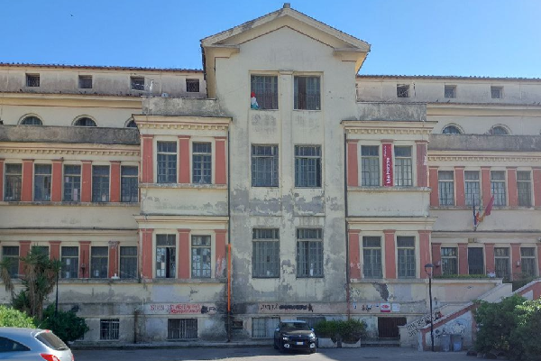
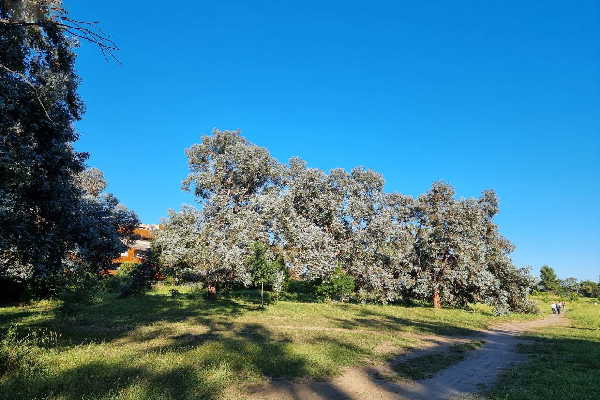
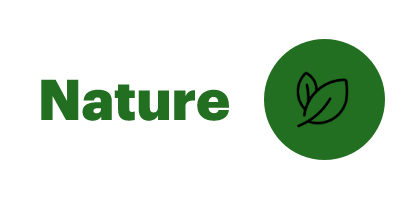
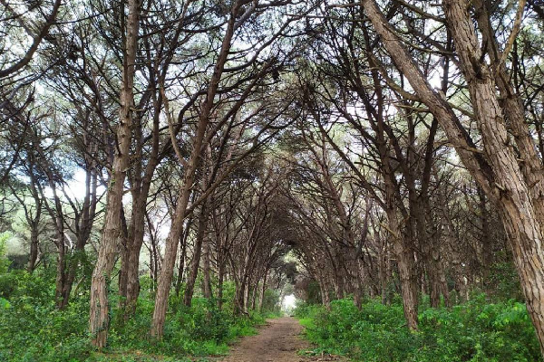

|

|

 Sentiero Pasolini Sull'argine della sponda che da` verso Ostia, e` stato aperto un sentiero per bici e pedoni, che partendo da Ostia Antica arriva al Grande Raccordo Anulare Maggiori info Trova percorso |

Pineta di Ostia La Pineta di Castelfusano e` il piu` grande parco esistente a Roma, e il suo nome deriva da quello di un'antica famiglia Romana "Fusius". Maggiori info Trova percorso |